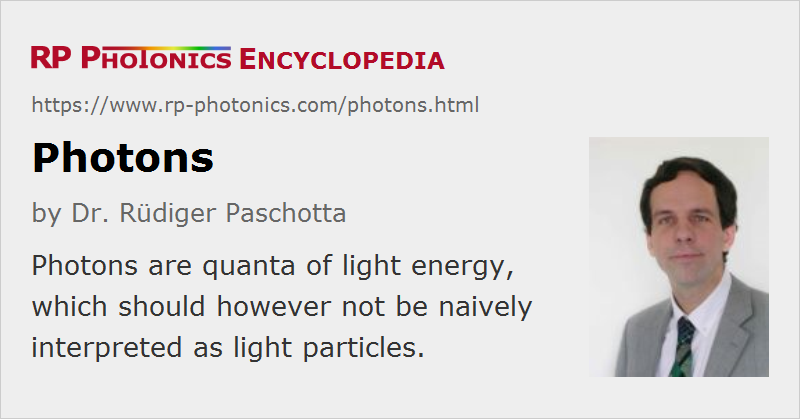

Photons
Definition: quanta of light energy
German: Photonen
Categories: general optics, quantum optics, physical foundations
How to cite the article; suggest additional literature
Author: Dr. Rüdiger Paschotta
When a weak light beam hits a sensitive photodetector, energy is found to be delivered in the form of small bunches, rather than continuously. This can be interpreted so that the light beam consists of small bunches of energy, called photons or light quanta (German 'Lichtquanten' = portions of light). The photon energy is h ν = h c / λ, i.e. the product of Planck's constant h and the optical frequency ν, and is also related to the vacuum wavelength λ. The idea that light consists of such energy bunches had already been used early in the 20th century by Max Planck in the context of thermal radiation, and by Albert Einstein when investigating the photoelectric effect. The term photon, however, was coined only in 1926 by the physical chemist Gilbert N. Lewis [1].
Although a 'naïve' interpretation of photons as particles of light gives a useful picture for the intuitive understanding of many quantum phenomena, it can be seriously misleading to apply it without understanding its limitations. A consistent and very powerful, but certainly not simple description of the nature of light is achieved by modern quantum optics. Here, photons are seen as the elementary excitations of the electromagnetic quantum field. This theory attributes fairly strange properties to photons, which cannot be reconciled either with a simple particle picture or with a pure wave picture.
Some Key Properties of Photons
- The propagation of light (e.g. in free space or in a waveguide) is that of a wave field. The quantum-mechanical field amplitude arising at some point in space and time is the superposition of contributions which correspond to different possible paths for light. These contributions can constructively or destructively interfere with each other, and this is the basis of the well-known optical interference effects. A pure particle picture is difficult to reconcile with the observations, because e.g. in the classical double-slit experiment an ordinary particle would have to go through one of the two slits, and the other slit would be irrelevant; it could not be explained why particles can reach certain locations behind the double slit only when one of the slits is blocked, but not when both are open (destructive interference).
- When light interacts with atoms or other particles, only amounts of energy which are integer multiples of the photon energy h ν can be transferred to or from the light field. This can be easily interpreted as absorption or emission of some number of photons. Such processes are possible only if the particles involved (e.g. atoms) are able to accept such amounts of energy, i.e., only if they have quantum-mechanical energy levels with an energy difference corresponding to the photon energy, or in some cases some integer multiple of it (→ two-photon absorption). A pure wave picture could explain these energy constraints as resonance effects, but can not explain the quantization of exchanged energy.
- The energy quantization is also apparent in the interaction with sensitive photodetectors, which allow for photon counting, i.e. to register single photon absorption events. This finds applications in various areas of science and technology.
- Photons have zero rest mass, and can therefore not be slowed or brought to rest. There are phenomena of “slow light”, but such phenomena occur only in media, where the electromagnetic field strongly interacts with matter. There is then more than only an electromagnetic excitation, and a pure photon picture does not properly describe reality.
- Photons can carry angular momentum of two different forms: resulting from their spin and also as an orbital angular momentum related to the corresponding electric field profile.
- Due to their boson nature, multiple photons (unlike electrons) “like” to populate the same mode of the radiation field. This can be seen e.g. in the process of stimulated emission (and is thus also very important for lasers), but also in the energy spectrum of thermally excited radiation (black body radiation).
- Photons can occur in entangled states, where certain properties (e.g. polarization) are correlated between different photons, even though these properties acquire definite values only when a measurement is performed. As measurements on the different photons can occur at different places, this seemed to imply the possibility of superluminal transmission of information (Einstein–Podolsky–Rosen paradox), but a closer inspection shows that in reality this is not the case.
Of course, quantum theory can be applied to any kind of electromagnetic wave phenomena, not only to visible light. However, quantum effects are not as important e.g. in the field of radio technology, as in optics and laser technology. This is because the photon energy of radio waves is very tiny compared with the thermal energy kB T at room temperature, whereas the opposite is true for optical phenomena.
In laser physics, a frequently considered case is that of photons propagating in media, e.g. in transparent crystals or glasses, including laser gain media. Strictly, the term photon is then no longer appropriate, as electromagnetic waves interact with such media, and what propagates are quasi-particles, sometimes called polaritons, which resemble coupled excitations of the electromagnetic field and a polarizable medium.
Questions and Comments from Users
Here you can submit questions and comments. As far as they get accepted by the author, they will appear above this paragraph together with the author’s answer. The author will decide on acceptance based on certain criteria. Essentially, the issue must be of sufficiently broad interest.
Please do not enter personal data here; we would otherwise delete it soon. (See also our privacy declaration.) If you wish to receive personal feedback or consultancy from the author, please contact him e.g. via e-mail.
By submitting the information, you give your consent to the potential publication of your inputs on our website according to our rules. (If you later retract your consent, we will delete those inputs.) As your inputs are first reviewed by the author, they may be published with some delay.
Bibliography
| [1] | G. N. Lewis, “The conservation of photons”, Nature 118, 874 (1926), doi:10.1038/118874a0 |
| [2] | R. A. Beth, “Mechanical detection and measurement of the angular momentum of light”, Phys. Rev. 50 (2), 115 (1936), doi:10.1103/PhysRev.50.115 |
| [3] | R. Hanbury Brown and R. Q. Twiss, “Correlation between photons in two coherent beams of light”, Nature 177, 27 (1956), doi:10.1038/177027a0 |
| [4] | G. Molina-Terriza, J. P. Torres and L. Torner, “Twisted photons”, Nat. Phys. 3, 3050 (2007), doi:10.1038/nphys607 |
| [5] | K. E. Ballantine, J. F. Donegan and P. R. Eastham, “There are many ways to spin a photon: Half-quantization of a total optical angular momentum”, Science Advances 2 (4), e15ß1849 (2016), doi:10.1126/sciadv.1501748 |
| [6] | C. Cohen-Tannoudji, J. Dupont-Roc and G. Grynberg, Photons and Atoms: Introduction to Quantum Electrodynamics, Wiley, New York (1997) |
| [7] | C. Roychoudhuri, A. F. Kracklauer, and K. Creath (eds.), The Nature of Light. What is a Photon?, CRC Press, Boca Raton, FL (2008) |
See also: photon counting, quantum optics, spontaneous emission, stimulated emission, nonclassical light, phonons, The Photonics Spotlight 2007-03-23, The Photonics Spotlight 2008-05-05
and other articles in the categories general optics, quantum optics, physical foundations
|  |
If you like this page, please share the link with your friends and colleagues, e.g. via social media:
These sharing buttons are implemented in a privacy-friendly way!